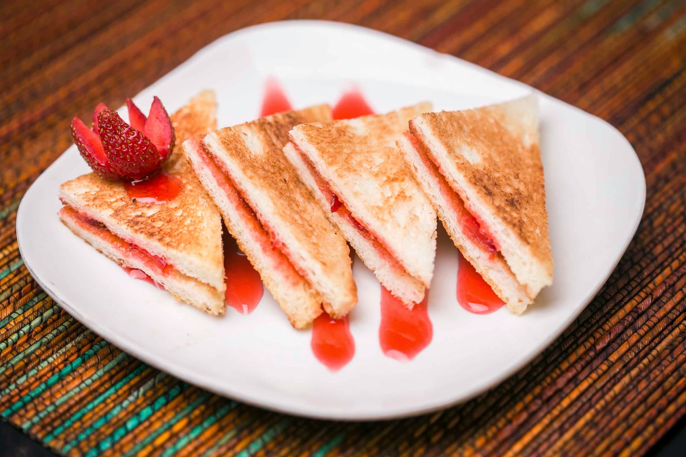
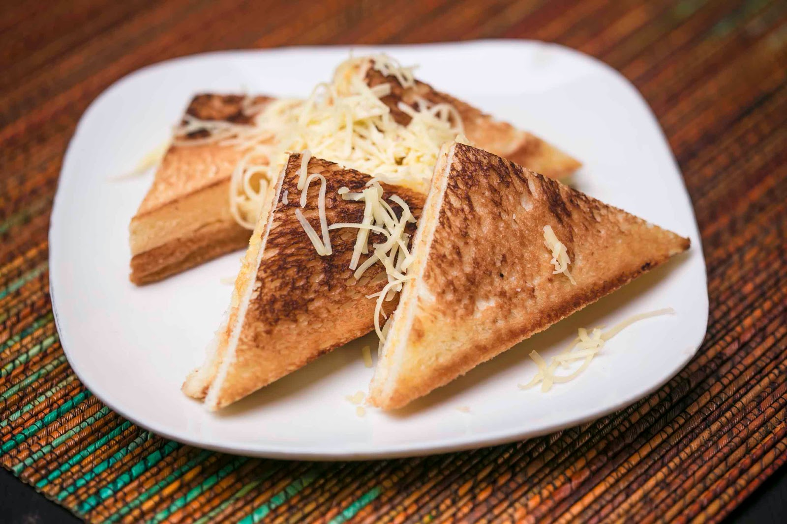

Macam-Macam Roti Bakar
Roti bakar? Siapa sih yang nggak kepengen, hai good people jadi dewasa ini banyak banget kan yang tertarik sama makanan simpel ini. Emang kharisma rasa dari makanan ini gaada matinya. Gimana nggak makin hits, sekarang banyak banget macem-macem variasi olahan dari roti bakar, mulai dari proses menghias sebelum dihidangkannya ataupun macam rasanya yang semakin banyak. Ini nih contohnya kayak dibawah ini.

Gimana? Masih kurang? Ahahaha sebentar, makanan ini cukup tenar di Ibukota Jakarta. Ada beberapa penjual yang tiap harinya mulai berjualan dari pukul 7 pagi sampai 2 malam. Bayangkan 12 jam lebih jam jual, berapa biji roti yang terjual, mantab!

Apa sih Roti Bakar?
Roti bakar merujuk kepada kepingan roti yang dibakar agar garing. Roti bakar panas adalah lebih rangup dan keras dan dapat menampung hias atas dengan lebih baik. Membakar roti juga merupakan cara umum untuk menjadikan roti yang sudah masuk angin lebih sedap rasanya. Roti bakar biasanya dimakan sebagai sarapan dan sering dihidangkan bersama mentega, keju, marmalad atau hias atas lain.
Rasa Roti Bakar Lain
{kind=link}
{kind=link}
{kind=link}